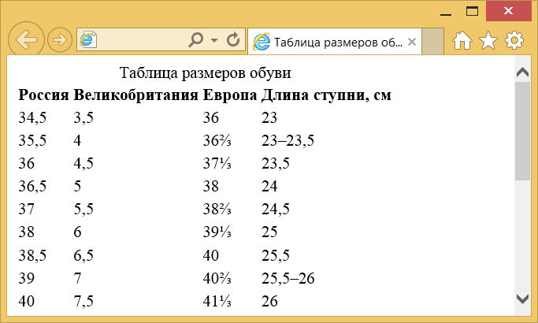

Элемент <table>
| Internet Explorer | Chrome | Opera | Safari | Firefox |
| 3 | 1 | 3.5 | 1 | 1 |
| Android | Firefox Mobile | Opera Mobile | Safari Mobile |
| 1 | 1 | 6 | 1 |
<table> служит контейнером для элементов, определяющих содержимое таблицы. Любая таблица состоит из строк и ячеек, которые задаются с помощью элементов <tr> и <td>. Внутри <table> допустимо использовать следующие элементы: <caption>, <col>, <colgroup>, <tbody>, <td>, <tfoot>, <th>, <thead> и <tr>.
Таблицы с невидимой границей долгое время использовались для верстки веб-страниц, позволяя разделять документ на модульные блоки. Подобный способ применения таблиц нашёл воплощение на многих сайтах, пока ему на смену не пришли более современные способы вёрстки.
Синтаксис
<table>
<tr>
<td>...</td>
</tr>
</table>Закрывающий тег
Аттрибуты
- align
- Определяет выравнивание таблицы.
- background
- Задаёт фоновый рисунок в таблице.
- bgcolor
- Цвет фона таблицы.
- border
- Толщина рамки в пикселях.
- bordercolor
- Цвет рамки.
- cellpadding
- Отступ от рамки до содержимого ячейки.
- cellspacing
- Расстояние между ячеек.
- cols
- Число колонок в таблице.
- frame
- Сообщает браузеру, как отображать границы вокруг таблицы.
- rules
- Сообщает браузеру, где отображать границы между ячеек.
- summary
- Краткое описание таблицы.
- width
- Ширина таблицы.
Также для этого элемента доступны универсальные атрибуты и события.
Пример
<!DOCTYPE HTML>
<html>
<head>
<meta charset="utf-8">
<title>Таблица размеров обуви</title>
</head>
<body>
<table>
<caption>Таблица размеров обуви</caption>
<tr>
<th>Россия</th>
<th>Великобритания</th>
<th>Европа</th>
<th>Длина ступни, см</th>
</tr>
<tr><td>34,5</td><td>3,5</td><td>36</td><td>23</td></tr>
<tr><td>35,5</td><td>4</td><td>36⅔</td><td>23–23,5</td></tr>
<tr><td>36</td><td>4,5</td><td>37⅓</td><td>23,5</td></tr>
<tr><td>36,5</td><td>5</td><td>38</td><td>24</td></tr>
<tr><td>37</td><td>5,5</td><td>38⅔</td><td>24,5</td></tr>
<tr><td>38</td><td>6</td><td>39⅓</td><td>25</td></tr>
<tr><td>38,5</td><td>6,5</td><td>40</td><td>25,5</td></tr>
<tr><td>39</td><td>7</td><td>40⅔</td><td>25,5–26</td></tr>
<tr><td>40</td><td>7,5</td><td>41⅓</td><td>26</td></tr>
<tr><td>40,5</td><td>8</td><td>42</td><td>26,5</td></tr>
<tr><td>41</td><td>8,5</td><td>42⅔</td><td>27</td></tr>
<tr><td>42</td><td>9</td><td>43⅓</td><td>27,5</td></tr>
<tr><td>43</td><td>9,5</td><td>44</td><td>28</td></tr>
<tr><td>43,5</td><td>10</td><td>44⅔</td><td>28–28,5</td></tr>
<tr><td>44</td><td>10,5</td><td>45⅓</td><td>28,5–29</td></tr>
<tr><td>44,5</td><td>11</td><td>46</td><td>29</td></tr>
<tr><td>45</td><td>11,5</td><td>46⅔</td><td>29,5</td></tr>
<tr><td>46</td><td>12</td><td>47⅓</td><td>30</td></tr>
<tr><td>46,5</td><td>12,5</td><td>48</td><td>30,5</td></tr>
<tr><td>47</td><td>13</td><td>48⅔</td><td>31</td></tr>
<tr><td>48</td><td>13,5</td><td>49⅓</td><td>31,5</td></tr>
</table>
</body>
</html>Результат данного примера показан на рис. 1.

Рис. 1. Вид таблицы
Спецификация ?
| Спецификация | Статус |
|---|---|
| HTML5 | Рекомендация |
| HTML 4.01 Specification | Рекомендация |
Спецификация
Каждая спецификация проходит несколько стадий одобрения.
- Recommendation (Рекомендация) — спецификация одобрена W3C и рекомендована как стандарт.
- Candidate Recommendation (Возможная рекомендация) — группа, отвечающая за стандарт, удовлетворена, как он соответствует своим целям, но требуется помощь сообщества разработчиков по реализации стандарта.
- Proposed Recommendation (Предлагаемая рекомендация) — на этом этапе документ представлен на рассмотрение Консультативного совета W3C для окончательного утверждения.
- Working Draft (Рабочий проект) — более зрелая версия черновика после обсуждения и внесения поправок для рассмотрения сообществом.
- Editorʼs draft (Редакторский черновик) — черновая версия стандарта после внесения правок редакторами проекта.
- Draft (Черновик спецификации) — первая черновая версия стандарта.
Особняком стоит живой стандарт HTML (Living) — он не придерживается традиционной нумерации версий, поскольку находится в постоянной разработке и обновляется регулярно.